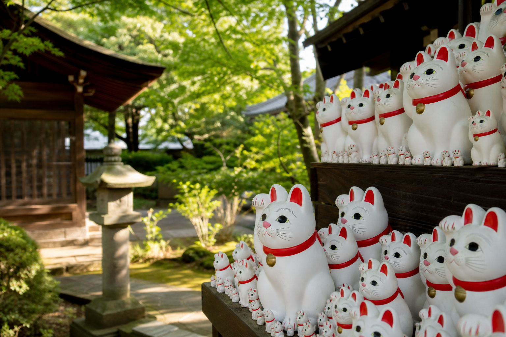

DAY 04 · 8/19 WEDNESDAY
招財貓、神宮
與澀谷天空
上午寺院與神宮，中午轉至初台高樓餐廳，再順著原宿、表參道一路走入澀谷。
ROUTE
移動動線
JR＋小田急線
上野 → 豪德寺
從山門、三重塔走到招財貓奉納所。
豪德寺 → 明治神宮
由原宿側進入，先走南參道與大鳥居。
明治神宮本殿
從鳥居到本殿距離長，夏季須預留步行體力。
原宿 → 初台東京 Opera City
午餐與高樓景觀集中處理，再返回原宿區。
竹下通 → 神宮前 → 表參道
由年輕街區走向設計商場，不需搭車反覆轉移。
表參道 → 澀谷十字路口 → SHIBUYA SKY
忠犬八公先拍，展望台依預約時間入場。
澀谷晚餐 → 淺草夜景 → 上野
若體力不足，淺草夜景可刪除，留到第六天清晨。
SHOPPING MODE
D4 Fashion Guide
竹下通的青年平價、原宿與 Cat Street 的街頭／古著、表參道設計師品牌，再到澀谷潮流節點；可依風格、預算與剩餘時間直接縮小店舖。
- 竹下通
- 原宿
- Cat Street
- 表參道
- 澀谷